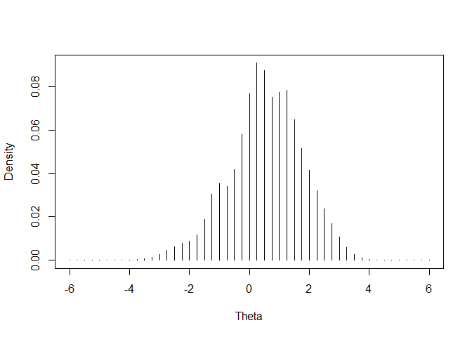
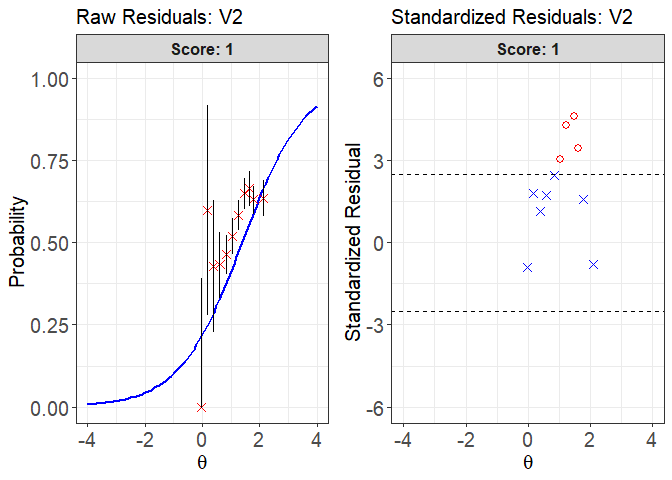
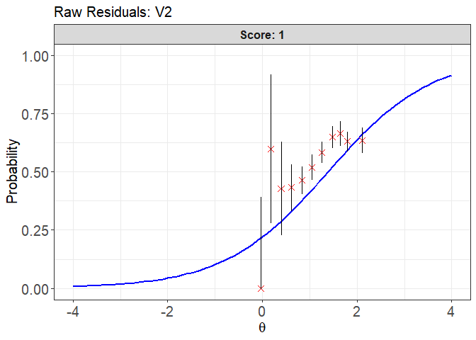
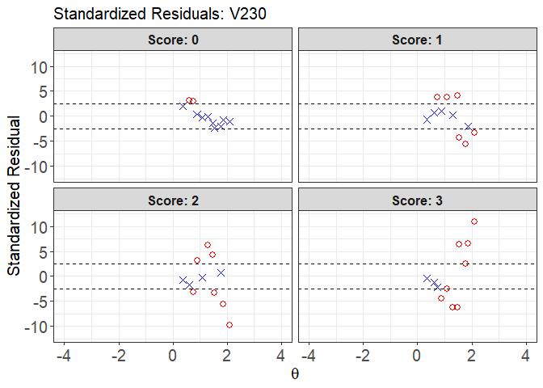
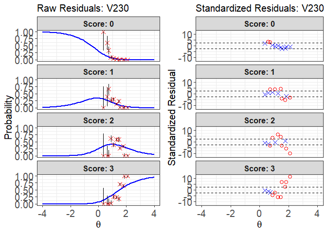
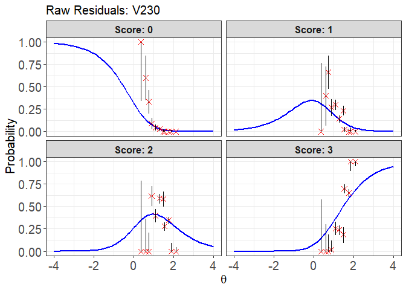
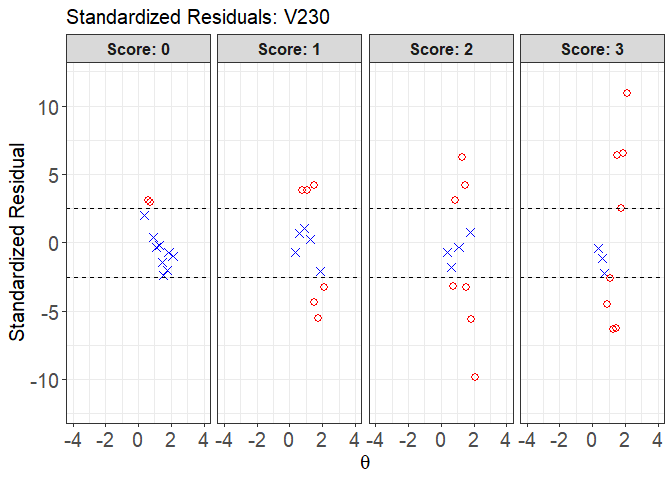

The goal of irtQ is to fit unidimensional item response theory (IRT) models to data that may include both dichotomous and polytomous items. The package enables:
- Typical item parameters estimation
- Pretest item calibration
- Multiple-group item calibration
- Estimation of examinees’ latent abilities
- Evaluation of model-data fit at the item level
Item parameter estimation is conducted using marginal maximum likelihood estimation via the expectation-maximization (MMLE-EM) algorithm (Bock & Aitkin, 1981).
For pretest item calibration, irtQ supports:
- Fixed item parameter calibration (FIPC; Kim, 2006),
- Fixed ability parameter calibration (FAPC; Ban et al., 2001; Stocking, 1988).
For ability estimation, several widely used scoring methods are available, including:
- Maximum likelihood estimation (ML)
- Maximum likelihood estimation with fences (MLF; Han, 2016)
- Weighted likelihood estimation (WL; Warm, 1989)
- Maximum a posteriori estimation (MAP; Hambleton et al., 1991)
- Expected a posteriori estimation (EAP; Bock & Mislevy, 1982)
- EAP summed scoring (Thissen et al., 1995; Thissen & Orlando, 2001)
- Inverse test characteristic curve (TCC) scoring (e.g., Kolen & Brennan, 2004; Kolen & Tong, 2010; Stocking, 1996)
Also, model fit assessment includes item fit statistics such as:
- Chi-square (X²; Bock, 1960; Yen, 1981),
- Likelihood ratio chi-square (G²; McKinley & Mills, 1985),
- Infit and outfit statistics (Ames et al., 2015)
- Graphical residual diagnostics (Hambleton et al., 1991)
- S-X² (Orlando & Thissen, 2000, 2003)
In addition, the package offers a variety of utilities for IRT analysis, including:
- Detecting DIF (e.g., RDIF, CATSIB)
- Computing classification accuracy and consistency indices
- Simulating response data
- Computing the conditional distribution of observed scores using the Lord-Wingersky recursion
- Calculating item and test information and characteristic functions
- Visualizing item and test characteristic and information curves
- Importing item or ability parameters from popular IRT software
- Running flexMIRT (Cai, 2017) directly from R
- Supporting additional tools for flexible and practical IRT analyses
Installation
You can install the released version of irtQ from CRAN with:
install.packages("irtQ")You can also install the latest development version of irtQ from GitHub using the devtools package:
install.packages("devtools")
devtools::install_github("hwangQ/irtQ")1. Item Calibration for a Linear Test Form
Item parameter estimation for a linear test form can be performed using the irtQ::est_irt() function, which implements marginal maximum likelihood estimation via the expectation-maximization (MMLE-EM) algorithm (Bock & Aitkin, 1981). The function returns item parameter estimates along with their standard errors, computed using the cross-product approximation method (Meilijson, 1989).
The irtQ package supports calibration for mixed-format tests containing both dichotomous and polytomous items. It also provides a flexible set of options to address various practical calibration needs. For example, users can:
- Specify prior distributions for item parameters
- Fix specific parameters (e.g., the guessing parameter in the 3PL model)
- Estimate the latent ability distribution using a nonparametric histogram method (Woods, 2007)
In the irtQ package, item calibration for a linear test form typically involves two main steps:
-
Prepare the examinees’ response data set for the linear test form
To estimate item parameters using the
irtQ::est_irt()function, a response data set for the linear test form must first be prepared. The data should be provided in either a matrix or data frame format, where rows represent examinees and columns represent items. If there are missing responses, they should be properly coded (e.g.,NA). -
Estimate item parameters using the
irtQ::est_irt()functionTo estimate item parameters, several key input arguments must be specified in the
irtQ::est_irt()function:-
data: A matrix or data frame containing examinees’ item responses. -
model: A character vector specifying the IRT model for each item (e.g.,"1PLM","2PLM","3PLM","GRM","GPCM"). -
cats: A numeric vector indicating the number of score categories for each item. For dichotomous items, use 2. -
D: A scaling constant (typically 1.702) to align the logistic function with the normal ogive model.
Optionally, you may incorporate prior distributions for item parameters:
-
use.aprior,use.bprior,use.gprior: Logical indicators specifying whether to apply prior distributions to the discrimination (a), difficulty (b), and guessing (g) parameters, respectively. -
aprior,bprior,gprior: Lists specifying the distributional form and corresponding parameters for each prior. Supported distributions include Beta, Log-normal, and Normal.
If the response data contain missing values, you must specify the missing value code via the
missingargument.By default, the latent ability distribution is assumed to follow a standard normal distribution (i.e., N(0, 1)). However, users can estimate the empirical histogram of the latent distribution by setting
EmpHist = TRUE, based on the nonparametric method proposed by Woods (2007). -
2. Pretest Item Calibration with the Fixed Item Parameter Calibration (FIPC) Method (e.g., Kim, 2006)
The fixed item parameter calibration (FIPC) method is a widely used approach for calibrating pretest items in computerized adaptive testing (CAT). It enables the placement of parameter estimates for newly developed items onto the same scale as the operational item parameters (i.e., the scale of the item bank), without the need for post hoc linking or rescaling procedures (Ban et al., 2001; Chen & Wang, 2016).
In FIPC, the parameters of the operational items are fixed, and the prior distribution of the latent ability variable is estimated during the calibration process. This estimated prior is used to place the pretest item parameters on the same scale as the fixed operational items (Kim, 2006).
In the irtQ package, FIPC is implemented through the following three steps:
-
Prepare the item metadata, including both the operational items (to be fixed) and the pretest items.
To perform FIPC using the
irtQ::est_irt()function, the item metadata must first be prepared. The item metadata is a structured data frame that includes essential information for each item, such as the number of score categories and the IRT model type. For more details, refer to the Details section of theirtQ::est_irt()documentation.In the FIPC procedure, the metadata must contain both:
- Operational items (whose parameters will be fixed), and
- Pretest items (whose parameters will be freely estimated).
For the pretest items, the
cats(number of score categories) andmodel(IRT model type) must be accurately specified. However, the item parameter values (e.g.,par.1,par.2,par.3) in the metadata serve only as placeholders and can be arbitrary, since the actual parameter estimates will be obtained during calibration.To facilitate creation of the metadata for FIPC, the helper function
irtQ::shape_df_fipc()can be used. -
Prepare the response data set from examinees who answered both the operational and pretest items.
To implement FIPC using the
irtQ::est_irt()function, examinees’ response data for the test form must be provided, including both operational and pretest items. The response data should be in a matrix or data frame format, where rows represent examinees and columns represent items. Note that the column order of the response data must exactly match the row order of the item metadata. -
Perform FIPC using the
irtQ::est_irt()function to calibrate the pretest items.When FIPC is performed using the
irtQ::est_irt()function, the parameters of pretest items are estimated while the parameters of operational items are fixed.To implement FIPC, you must provide the following arguments to
irtQ::est_irt():-
x: The item metadata, including both operational and pretest items. -
data: The examinee response data corresponding to the item metadata. -
fipc = TRUE: Enables fixed item parameter calibration. -
fipc.method: Specifies the FIPC method to be used (e.g.,"MEM"). -
fix.loc: A vector indicating the positions of the operational items to be fixed.
Optionally, you may estimate the empirical histogram and scale of the latent ability distribution by setting
EmpHist = TRUE. IfEmpHist = FALSE, a normal prior is assumed and its scale is updated iteratively during the EM algorithm.For additional details on implementing FIPC, refer to the documentation for
irtQ::est_irt(). -
3. Pretest Item Calibration with the Fixed Ability Parameter Calibration (FAPC) Method (e.g., Stocking, 1988)
In computerized adaptive testing (CAT), the fixed ability parameter calibration (FAPC) method—also known as Stocking’s Method A (Stocking, 1988)—is one of the simplest and most straightforward approaches for calibrating pretest items. It involves estimating item parameters using maximum likelihood estimation, conditional on known or estimated proficiency values.
FAPC is primarily used to place the parameter estimates of pretest items onto the same scale as the operational item parameters. It can also be used to recalibrate operational items when evaluating potential item parameter drift (Chen & Wang, 2016; Stocking, 1988). This method is known to produce accurate and unbiased item parameter estimates when items are randomly administered to examinees, rather than adaptively, which is often the case for pretest items (Ban et al., 2001; Chen & Wang, 2016).
In the package, FAPC can be conducted in two main steps:
-
Prepare a data set containing both the item response data and the corresponding ability (proficiency) estimates.
To use the
irtQ::est_item()function, two input data sets are required:- Ability estimates: A numeric vector containing examinees’ ability (or proficiency) estimates.
- Item response data: A matrix or data frame containing item responses, where rows represent examinees and columns represent items. The order of examinees in the response data must exactly match the order of the ability estimates.
-
Estimate the item parameters using the
irtQ::est_item()function.The
irtQ::est_item()function estimates pretest item parameters based on provided ability estimates. To use this function, you must specify the following arguments:-
data: A matrix or data frame containing examinees’ item responses. -
score: A numeric vector of examinees’ ability (proficiency) estimates. -
model: A character vector specifying the IRT model for each item (e.g.,"1PLM","2PLM","3PLM","GRM","GPCM"). -
cats: A numeric vector indicating the number of score categories for each item. For dichotomous items, use 2. -
D: A scaling constant (typically 1.702) to align the logistic function with the normal ogive model.
For additional details on implementing FAPC, refer to the documentation for
irtQ::est_item(). -
4. The Process of Evaluating the IRT Model–Data Fit
Evaluating how well an item response theory (IRT) model fits observed response data is a critical step in psychometric analysis. The irtQ package provides both statistical and graphical tools for evaluating item-level model fit. These include traditional fit statistics (e.g., X², G², infit, outfit, and S-X²) and diagnostic residual plots.
Model fit evaluation using irtQ typically involves the following three steps:
1. Prepare a data set for model fit analysis
Before conducting the IRT model fit analysis, three key data sets must be prepared:
-
Item metadata: A data frame containing item-level information, including:
- Item ID
- Number of score categories
- IRT model specification
- Calibrated item parameters
You can either construct this data frame manually or generate it using the
irtQ::shape_df()function. Additionally, if item parameters were estimated using other IRT software (e.g., BILOG-MG 3, PARSCALE 4, flexMIRT, or themirtR package), you can import them using the correspondingirtQ::bring.*()functions (e.g.,irtQ::bring.flexmirt(),irtQ::bring.bilog()). Ability estimates: A numeric vector of examinees’ estimated proficiency values.
Response data: A matrix or data frame in which rows represent examinees and columns represent items. The order of examinees in this matrix must exactly match that of the ability estimates, and the column order must match the item metadata.
2. Compute IRT item fit statistics using irtQ::irtfit()
The irtQ::irtfit() function calculates widely used item fit statistics, including:
- Chi-square (X²)
- Likelihood-ratio chi-square (G²)
- Infit and outfit statistics
To compute X² and G² statistics, the latent ability scale must be divided into several groups. Two grouping methods are available:
-
"equal.width": Divides the scale into intervals of equal length -
"equal.freq": Divides the scale into groups with equal numbers of examinees
You must also specify where the expected probabilities of item responses are calculated within each group. Two options are available:
-
"average": Uses the average ability estimate within each group -
"middle": Uses the midpoint of each interval
To implement this step, specify the item metadata (x), ability estimates (score), and response data (data) as arguments in the irtQ::irtfit() function. If you want to use more or fewer than ten ability groups, adjust the n.width argument accordingly. If the response data contain missing values, specify the missing value code using the missing argument.
Upon execution, the function returns item fit statistics and contingency tables used to compute the X² and G² statistics.
Note that the model-fit evaluation using the S-X² statistic can be implemented using the irtQ::sx2_fit() function.
3. Draw residual plots using the plot() method
After obtaining fit statistics using the irtQ::irtfit() function, you can use the plot() method to visualize residuals for individual items. Two types of plots are available: raw residual plot and standardized residual plot.
To generate a plot, specify the item to be examined using the item.loc argument. Only one item can be plotted at a time.
The ci.method argument controls how confidence intervals are computed in the raw residual plots. Supported methods include:
-
"wald": Wald interval based on the normal approximation (Laplace, -
"cp": Clopper–Pearson interval (Clopper & Pearson, 1934) -
"wilson": Wilson score interval (Wilson, 1927) -
"wilson.cr": Wilson score interval with continuity correction (Newcombe, 1998)
These graphical diagnostics complement the statistical fit measures, allowing for deeper investigation into the adequacy of model fit for individual items.
5. Examples of implementing online calibration and evaluating the IRT model-data fit
# Attach the packages
library(irtQ)
##---------------------------------------------------------------------------
## 1. Item parameter estimation for a linear test
## form
##---------------------------------------------------------------------------
## Step 1: Prepare response data for the
## reference group Import the '-prm.txt' output
## file from flexMIRT
meta_true <- system.file("extdata", "flexmirt_sample-prm.txt",
package = "irtQ")
# Extract item metadata using
# `irtQ::bring.flexmirt()` This will serve as the
# base test form for later pretest item examples
x_new <- irtQ::bring.flexmirt(file = meta_true, "par")$Group1$full_df
# Extract items 1 to 40 to define the linear test
# form used in this illustration
x_ref <- x_new[1:40, ]
# Generate true ability values (N = 2,000) from
# N(0, 1) for the reference group
set.seed(20)
theta_ref <- rnorm(2000, mean = 0, sd = 1)
# Simulate response data for the linear test form
# Scaling factor D = 1 assumes a logistic IRT
# model
data_ref <- irtQ::simdat(x = x_ref, theta = theta_ref,
D = 1)
## Step 2: Estimate item parameters for the
## linear test form using the following
## arguments: data = data_ref # Response data D =
## 1 # Scaling factor model = c(rep('3PLM', 38),
## rep('GRM', 2)) # Item models cats = c(rep(2,
## 38), rep(5, 2)) # Score categories per item
## item.id = paste0('Ref_I', 1:40) # Item IDs
## use.gprior = TRUE # Use prior for guessing
## parameter gprior = list(dist = 'beta', params
## = c(5, 16))# Prior: Beta(5,16) for g
## Quadrature = c(49, 6) # 49 quadrature points
## from -6 to 6 group.mean = 0 group.var = 1 #
## Fixed latent ability: N(0,1) EmpHist = TRUE #
## Estimate empirical ability distribution Etol =
## 1e-3 # E-step convergence tolerance MaxE = 500
## # Max EM iterations
mod_ref <- irtQ::est_irt(data = data_ref, D = 1, model = c(rep("3PLM",
38), rep("GRM", 2)), cats = c(rep(2, 38), rep(5,
2)), item.id = paste0("Ref_I", 1:40), use.gprior = TRUE,
gprior = list(dist = "beta", params = c(5, 16)),
Quadrature = c(49, 6), group.mean = 0, group.var = 1,
EmpHist = TRUE, Etol = 0.001, MaxE = 500)
#> Parsing input...
#> Estimating item parameters...
#> EM iteration: 1, Loglike: -53907.8298, Max-Change: 1.476851 EM iteration: 2, Loglike: -47810.7610, Max-Change: 0.333348 EM iteration: 3, Loglike: -47780.1401, Max-Change: 0.130911 EM iteration: 4, Loglike: -47777.7493, Max-Change: 0.064179 EM iteration: 5, Loglike: -47776.9296, Max-Change: 0.038227 EM iteration: 6, Loglike: -47776.4542, Max-Change: 0.026209 EM iteration: 7, Loglike: -47776.1402, Max-Change: 0.019566 EM iteration: 8, Loglike: -47775.9185, Max-Change: 0.015306 EM iteration: 9, Loglike: -47775.7539, Max-Change: 0.012285 EM iteration: 10, Loglike: -47775.6263, Max-Change: 0.01001 EM iteration: 11, Loglike: -47775.5239, Max-Change: 0.008238 EM iteration: 12, Loglike: -47775.4394, Max-Change: 0.006834 EM iteration: 13, Loglike: -47775.3679, Max-Change: 0.005706 EM iteration: 14, Loglike: -47775.3064, Max-Change: 0.004795 EM iteration: 15, Loglike: -47775.2525, Max-Change: 0.004052 EM iteration: 16, Loglike: -47775.2048, Max-Change: 0.003444 EM iteration: 17, Loglike: -47775.1621, Max-Change: 0.002944 EM iteration: 18, Loglike: -47775.1234, Max-Change: 0.002529 EM iteration: 19, Loglike: -47775.0882, Max-Change: 0.002184 EM iteration: 20, Loglike: -47775.0558, Max-Change: 0.001895 EM iteration: 21, Loglike: -47775.0259, Max-Change: 0.001652 EM iteration: 22, Loglike: -47774.9980, Max-Change: 0.001446 EM iteration: 23, Loglike: -47774.9719, Max-Change: 0.001271 EM iteration: 24, Loglike: -47774.9473, Max-Change: 0.001121 EM iteration: 25, Loglike: -47774.9241, Max-Change: 0.000993
#> Computing item parameter var-covariance matrix...
#> Estimation is finished in 5.32 seconds.
# Summarize estimation results
irtQ::summary(mod_ref)
#>
#> Call:
#> irtQ::est_irt(data = data_ref, D = 1, model = c(rep("3PLM", 38),
#> rep("GRM", 2)), cats = c(rep(2, 38), rep(5, 2)), item.id = paste0("Ref_I",
#> 1:40), use.gprior = TRUE, gprior = list(dist = "beta", params = c(5,
#> 16)), Quadrature = c(49, 6), group.mean = 0, group.var = 1,
#> EmpHist = TRUE, Etol = 0.001, MaxE = 500)
#>
#> Summary of the Data
#> Number of Items: 40
#> Number of Cases: 2000
#>
#> Summary of Estimation Process
#> Maximum number of EM cycles: 500
#> Convergence criterion of E-step: 0.001
#> Number of rectangular quadrature points: 49
#> Minimum & Maximum quadrature points: -6, 6
#> Number of free parameters: 124
#> Number of fixed items: 0
#> Number of E-step cycles completed: 25
#> Maximum parameter change: 0.0009933655
#>
#> Processing time (in seconds)
#> EM algorithm: 4.93
#> Standard error computation: 0.17
#> Total computation: 5.32
#>
#> Convergence and Stability of Solution
#> First-order test: Convergence criteria are satisfied.
#> Second-order test: Solution is a possible local maximum.
#> Computation of variance-covariance matrix:
#> Variance-covariance matrix of item parameter estimates is obtainable.
#>
#> Summary of Estimation Results
#> -2loglikelihood: 95549.84
#> Akaike Information Criterion (AIC): 95797.84
#> Bayesian Information Criterion (BIC): 96492.35
#> Item Parameters:
#> id cats model par.1 se.1 par.2 se.2 par.3 se.3 par.4 se.4
#> 1 Ref_I1 2 3PLM 0.69 0.15 1.14 0.27 0.19 0.07 NA NA
#> 2 Ref_I2 2 3PLM 1.77 0.17 -1.02 0.14 0.20 0.07 NA NA
#> 3 Ref_I3 2 3PLM 1.52 0.21 0.71 0.10 0.24 0.03 NA NA
#> 4 Ref_I4 2 3PLM 1.05 0.12 -0.44 0.20 0.18 0.07 NA NA
#> 5 Ref_I5 2 3PLM 0.92 0.16 0.27 0.26 0.26 0.07 NA NA
#> 6 Ref_I6 2 3PLM 1.87 0.20 0.73 0.06 0.09 0.02 NA NA
#> 7 Ref_I7 2 3PLM 1.06 0.19 1.20 0.13 0.18 0.04 NA NA
#> 8 Ref_I8 2 3PLM 0.97 0.16 0.95 0.15 0.16 0.05 NA NA
#> 9 Ref_I9 2 3PLM 1.30 0.22 0.73 0.13 0.28 0.04 NA NA
#> 10 Ref_I10 2 3PLM 1.86 0.20 0.19 0.08 0.16 0.03 NA NA
#> 11 Ref_I11 2 3PLM 0.99 0.12 -0.27 0.19 0.16 0.06 NA NA
#> 12 Ref_I12 2 3PLM 1.04 0.16 1.16 0.12 0.12 0.04 NA NA
#> 13 Ref_I13 2 3PLM 1.22 0.21 1.33 0.11 0.15 0.03 NA NA
#> 14 Ref_I14 2 3PLM 1.54 0.19 0.24 0.11 0.24 0.04 NA NA
#> 15 Ref_I15 2 3PLM 1.48 0.16 0.01 0.11 0.17 0.05 NA NA
#> 16 Ref_I16 2 3PLM 2.35 0.19 0.01 0.05 0.07 0.02 NA NA
#> 17 Ref_I17 2 3PLM 1.48 0.17 -0.03 0.12 0.21 0.05 NA NA
#> 18 Ref_I18 2 3PLM 1.70 0.30 1.24 0.09 0.27 0.02 NA NA
#> 19 Ref_I19 2 3PLM 2.15 0.19 -1.01 0.10 0.15 0.06 NA NA
#> 20 Ref_I20 2 3PLM 1.76 0.20 -1.28 0.19 0.30 0.09 NA NA
#> 21 Ref_I21 2 3PLM 1.73 0.20 -0.94 0.16 0.26 0.08 NA NA
#> 22 Ref_I22 2 3PLM 0.90 0.14 -0.23 0.29 0.25 0.08 NA NA
#> 23 Ref_I23 2 3PLM 0.96 0.10 -0.27 0.17 0.13 0.06 NA NA
#> 24 Ref_I24 2 3PLM 1.05 0.25 1.54 0.15 0.23 0.04 NA NA
#> 25 Ref_I25 2 3PLM 0.71 0.09 -1.60 0.37 0.22 0.09 NA NA
#> 26 Ref_I26 2 3PLM 0.88 0.10 -1.98 0.31 0.22 0.10 NA NA
#> 27 Ref_I27 2 3PLM 1.41 0.16 0.13 0.11 0.16 0.04 NA NA
#> 28 Ref_I28 2 3PLM 2.73 0.30 0.12 0.06 0.25 0.03 NA NA
#> 29 Ref_I29 2 3PLM 1.27 0.13 -1.38 0.21 0.22 0.09 NA NA
#> 30 Ref_I30 2 3PLM 1.69 0.27 0.89 0.10 0.35 0.03 NA NA
#> 31 Ref_I31 2 3PLM 1.04 0.16 0.84 0.13 0.14 0.04 NA NA
#> 32 Ref_I32 2 3PLM 1.69 0.19 -0.70 0.16 0.30 0.07 NA NA
#> 33 Ref_I33 2 3PLM 1.24 0.11 -1.38 0.18 0.17 0.07 NA NA
#> 34 Ref_I34 2 3PLM 1.38 0.18 0.37 0.12 0.21 0.04 NA NA
#> 35 Ref_I35 2 3PLM 1.68 0.21 0.01 0.12 0.28 0.05 NA NA
#> 36 Ref_I36 2 3PLM 1.02 0.19 1.35 0.13 0.16 0.04 NA NA
#> 37 Ref_I37 2 3PLM 1.92 0.19 -0.21 0.09 0.17 0.04 NA NA
#> 38 Ref_I38 2 3PLM 0.72 0.10 -0.43 0.34 0.21 0.09 NA NA
#> 39 Ref_I39 5 GRM 1.96 0.09 -1.83 0.08 -1.17 0.05 -0.62 0.04
#> 40 Ref_I40 5 GRM 1.33 0.06 -0.73 0.06 -0.07 0.05 0.58 0.05
#> par.5 se.5
#> 1 NA NA
#> 2 NA NA
#> 3 NA NA
#> 4 NA NA
#> 5 NA NA
#> 6 NA NA
#> 7 NA NA
#> 8 NA NA
#> 9 NA NA
#> 10 NA NA
#> 11 NA NA
#> 12 NA NA
#> 13 NA NA
#> 14 NA NA
#> 15 NA NA
#> 16 NA NA
#> 17 NA NA
#> 18 NA NA
#> 19 NA NA
#> 20 NA NA
#> 21 NA NA
#> 22 NA NA
#> 23 NA NA
#> 24 NA NA
#> 25 NA NA
#> 26 NA NA
#> 27 NA NA
#> 28 NA NA
#> 29 NA NA
#> 30 NA NA
#> 31 NA NA
#> 32 NA NA
#> 33 NA NA
#> 34 NA NA
#> 35 NA NA
#> 36 NA NA
#> 37 NA NA
#> 38 NA NA
#> 39 -0.17 0.04
#> 40 1.10 0.06
#> Group Parameters:
#> mu sigma2 sigma
#> estimates 0 1 1
#> se NA NA NA
# Extract item parameter estimates
est_ref <- mod_ref$par.est
print(est_ref)
#> id cats model par.1 par.2 par.3 par.4 par.5
#> 1 Ref_I1 2 3PLM 0.6919957 1.14484402 0.18976499 NA NA
#> 2 Ref_I2 2 3PLM 1.7724464 -1.02099189 0.19616040 NA NA
#> 3 Ref_I3 2 3PLM 1.5150979 0.70966856 0.23867404 NA NA
#> 4 Ref_I4 2 3PLM 1.0524673 -0.43526130 0.17728798 NA NA
#> 5 Ref_I5 2 3PLM 0.9167739 0.26820573 0.26351619 NA NA
#> 6 Ref_I6 2 3PLM 1.8666135 0.72927989 0.08652424 NA NA
#> 7 Ref_I7 2 3PLM 1.0562015 1.19815132 0.18056280 NA NA
#> 8 Ref_I8 2 3PLM 0.9748064 0.94777748 0.15848887 NA NA
#> 9 Ref_I9 2 3PLM 1.3025729 0.73175285 0.28029919 NA NA
#> 10 Ref_I10 2 3PLM 1.8639741 0.18640838 0.16366457 NA NA
#> 11 Ref_I11 2 3PLM 0.9939469 -0.26792404 0.15892792 NA NA
#> 12 Ref_I12 2 3PLM 1.0372451 1.16353752 0.11695580 NA NA
#> 13 Ref_I13 2 3PLM 1.2190362 1.33299399 0.15362908 NA NA
#> 14 Ref_I14 2 3PLM 1.5357356 0.23646403 0.23961503 NA NA
#> 15 Ref_I15 2 3PLM 1.4824881 0.01278565 0.16718700 NA NA
#> 16 Ref_I16 2 3PLM 2.3536532 0.01021881 0.06936722 NA NA
#> 17 Ref_I17 2 3PLM 1.4812118 -0.02787402 0.21368590 NA NA
#> 18 Ref_I18 2 3PLM 1.7011526 1.23768149 0.26906305 NA NA
#> 19 Ref_I19 2 3PLM 2.1548402 -1.01143124 0.14829321 NA NA
#> 20 Ref_I20 2 3PLM 1.7590705 -1.27947219 0.30164290 NA NA
#> 21 Ref_I21 2 3PLM 1.7311826 -0.93888503 0.26145478 NA NA
#> 22 Ref_I22 2 3PLM 0.8950656 -0.23309090 0.24895260 NA NA
#> 23 Ref_I23 2 3PLM 0.9604247 -0.27453531 0.13157552 NA NA
#> 24 Ref_I24 2 3PLM 1.0475077 1.53775301 0.22975399 NA NA
#> 25 Ref_I25 2 3PLM 0.7093919 -1.60381822 0.21525701 NA NA
#> 26 Ref_I26 2 3PLM 0.8782582 -1.97974491 0.22367121 NA NA
#> 27 Ref_I27 2 3PLM 1.4142228 0.12900789 0.16073407 NA NA
#> 28 Ref_I28 2 3PLM 2.7271259 0.11722864 0.24875028 NA NA
#> 29 Ref_I29 2 3PLM 1.2736643 -1.38227008 0.22190753 NA NA
#> 30 Ref_I30 2 3PLM 1.6924004 0.89383796 0.35473129 NA NA
#> 31 Ref_I31 2 3PLM 1.0382178 0.83916998 0.14081448 NA NA
#> 32 Ref_I32 2 3PLM 1.6949111 -0.69941722 0.30436382 NA NA
#> 33 Ref_I33 2 3PLM 1.2377865 -1.38353599 0.16635813 NA NA
#> 34 Ref_I34 2 3PLM 1.3780871 0.37216894 0.20560614 NA NA
#> 35 Ref_I35 2 3PLM 1.6786172 0.01343367 0.28045264 NA NA
#> 36 Ref_I36 2 3PLM 1.0208415 1.35077167 0.16012085 NA NA
#> 37 Ref_I37 2 3PLM 1.9186509 -0.21446010 0.17043569 NA NA
#> 38 Ref_I38 2 3PLM 0.7239630 -0.42947088 0.21019599 NA NA
#> 39 Ref_I39 5 GRM 1.9602130 -1.83262071 -1.16744768 -0.6208679 -0.1692025
#> 40 Ref_I40 5 GRM 1.3329010 -0.72583244 -0.06982294 0.5783162 1.1047434
##------------------------------------------------------------------------------
## 2. Pretest item calibration using Fixed Item
## Parameter Calibration (FIPC)
##------------------------------------------------------------------------------
## Step 1: Prepare item metadata for both fixed
## operational items and pretest items Define
## anchor item positions (items to be fixed)
fixed_pos <- c(1:40)
# Specify IDs, models, and categories for 15
# pretest items Includes 12 3PLM and 3 GRM items
# (each GRM has 5 categories)
new_ids <- paste0("New_I", 1:15)
new_models <- c(rep("3PLM", 12), rep("GRM", 3))
new_cats <- c(rep(2, 12), rep(5, 3))
# Construct item metadata using
# `shape_df_fipc()`. See Details of
# `shape_df_fipc()` for more information First 40
# items are anchor items (fixed); last 15 are
# pretest (freely estimated)
meta_fipc <- irtQ::shape_df_fipc(x = est_ref, fix.loc = fixed_pos,
item.id = new_ids, cats = new_cats, model = new_models)
## Step 2: Prepare response data for the new test
## form Generate latent abilities for 2,000 new
## examinees from N(0.5, 1.3²)
set.seed(21)
theta_new <- rnorm(2000, mean = 0.5, sd = 1.3)
# Simulate response data using true item
# parameters and true abilities
data_new <- irtQ::simdat(x = x_new, theta = theta_new,
D = 1)
## Step 3: Calibrate pretest items using FIPC Fit
## 3PLM to dichotomous and GRM to polytomous
## items Fix first 40 items and freely estimate
## the remaining 15 pretest items using the
## following arguments: x = meta_fipc # Combined
## item metadata data = data_new # Response data
## D = 1 # Scaling constant use.gprior = TRUE #
## Use prior for guessing parameter gprior =
## list(dist = 'beta', params = c(5, 16)) #
## Prior: Beta(5,16) for g Quadrature = c(49, 6)
## # 49 quadrature points from -6 to 6 EmpHist =
## TRUE # Estimate empirical ability distribution
## Etol = 1e-3 # E-step convergence tolerance
## MaxE = 500 # Max EM iterations fipc = TRUE #
## Enable FIPC fipc.method = 'MEM' # Use Multiple
## EM cycles fix.loc = c(1:40) # Anchor item
## positions to fix
mod_fipc <- irtQ::est_irt(x = meta_fipc, data = data_new,
D = 1, use.gprior = TRUE, gprior = list(dist = "beta",
params = c(5, 16)), Quadrature = c(49, 6),
EmpHist = TRUE, Etol = 0.001, MaxE = 500, fipc = TRUE,
fipc.method = "MEM", fix.loc = c(1:40))
#> Parsing input...
#> Estimating item parameters...
#> EM iteration: 1, Loglike: -41799.5018, Max-Change: 2.177366 EM iteration: 2, Loglike: -60177.8990, Max-Change: 0.660102 EM iteration: 3, Loglike: -60143.0624, Max-Change: 0.22625 EM iteration: 4, Loglike: -60141.1866, Max-Change: 0.082367 EM iteration: 5, Loglike: -60140.7281, Max-Change: 0.031397 EM iteration: 6, Loglike: -60140.4860, Max-Change: 0.012555 EM iteration: 7, Loglike: -60140.3168, Max-Change: 0.005361 EM iteration: 8, Loglike: -60140.1888, Max-Change: 0.002513 EM iteration: 9, Loglike: -60140.0888, Max-Change: 0.001326 EM iteration: 10, Loglike: -60140.0086, Max-Change: 0.000788
#> Computing item parameter var-covariance matrix...
#> Estimation is finished in 1.39 seconds.
# Summarize estimation results
irtQ::summary(mod_fipc)
#>
#> Call:
#> irtQ::est_irt(x = meta_fipc, data = data_new, D = 1, use.gprior = TRUE,
#> gprior = list(dist = "beta", params = c(5, 16)), Quadrature = c(49,
#> 6), EmpHist = TRUE, Etol = 0.001, MaxE = 500, fipc = TRUE,
#> fipc.method = "MEM", fix.loc = c(1:40))
#>
#> Summary of the Data
#> Number of Items: 55
#> Number of Cases: 2000
#>
#> Summary of Estimation Process
#> Maximum number of EM cycles: 500
#> Convergence criterion of E-step: 0.001
#> Number of rectangular quadrature points: 49
#> Minimum & Maximum quadrature points: -6, 6
#> Number of free parameters: 53
#> Number of fixed items: 40
#> Number of E-step cycles completed: 10
#> Maximum parameter change: 0.0007875969
#>
#> Processing time (in seconds)
#> EM algorithm: 0.98
#> Standard error computation: 0.05
#> Total computation: 1.39
#>
#> Convergence and Stability of Solution
#> First-order test: Convergence criteria are satisfied.
#> Second-order test: Solution is a possible local maximum.
#> Computation of variance-covariance matrix:
#> Variance-covariance matrix of item parameter estimates is obtainable.
#>
#> Summary of Estimation Results
#> -2loglikelihood: 120280
#> Akaike Information Criterion (AIC): 120386
#> Bayesian Information Criterion (BIC): 120682.9
#> Item Parameters:
#> id cats model par.1 se.1 par.2 se.2 par.3 se.3 par.4 se.4
#> 1 Ref_I1 2 3PLM 0.69 NA 1.14 NA 0.19 NA NA NA
#> 2 Ref_I2 2 3PLM 1.77 NA -1.02 NA 0.20 NA NA NA
#> 3 Ref_I3 2 3PLM 1.52 NA 0.71 NA 0.24 NA NA NA
#> 4 Ref_I4 2 3PLM 1.05 NA -0.44 NA 0.18 NA NA NA
#> 5 Ref_I5 2 3PLM 0.92 NA 0.27 NA 0.26 NA NA NA
#> 6 Ref_I6 2 3PLM 1.87 NA 0.73 NA 0.09 NA NA NA
#> 7 Ref_I7 2 3PLM 1.06 NA 1.20 NA 0.18 NA NA NA
#> 8 Ref_I8 2 3PLM 0.97 NA 0.95 NA 0.16 NA NA NA
#> 9 Ref_I9 2 3PLM 1.30 NA 0.73 NA 0.28 NA NA NA
#> 10 Ref_I10 2 3PLM 1.86 NA 0.19 NA 0.16 NA NA NA
#> 11 Ref_I11 2 3PLM 0.99 NA -0.27 NA 0.16 NA NA NA
#> 12 Ref_I12 2 3PLM 1.04 NA 1.16 NA 0.12 NA NA NA
#> 13 Ref_I13 2 3PLM 1.22 NA 1.33 NA 0.15 NA NA NA
#> 14 Ref_I14 2 3PLM 1.54 NA 0.24 NA 0.24 NA NA NA
#> 15 Ref_I15 2 3PLM 1.48 NA 0.01 NA 0.17 NA NA NA
#> 16 Ref_I16 2 3PLM 2.35 NA 0.01 NA 0.07 NA NA NA
#> 17 Ref_I17 2 3PLM 1.48 NA -0.03 NA 0.21 NA NA NA
#> 18 Ref_I18 2 3PLM 1.70 NA 1.24 NA 0.27 NA NA NA
#> 19 Ref_I19 2 3PLM 2.15 NA -1.01 NA 0.15 NA NA NA
#> 20 Ref_I20 2 3PLM 1.76 NA -1.28 NA 0.30 NA NA NA
#> 21 Ref_I21 2 3PLM 1.73 NA -0.94 NA 0.26 NA NA NA
#> 22 Ref_I22 2 3PLM 0.90 NA -0.23 NA 0.25 NA NA NA
#> 23 Ref_I23 2 3PLM 0.96 NA -0.27 NA 0.13 NA NA NA
#> 24 Ref_I24 2 3PLM 1.05 NA 1.54 NA 0.23 NA NA NA
#> 25 Ref_I25 2 3PLM 0.71 NA -1.60 NA 0.22 NA NA NA
#> 26 Ref_I26 2 3PLM 0.88 NA -1.98 NA 0.22 NA NA NA
#> 27 Ref_I27 2 3PLM 1.41 NA 0.13 NA 0.16 NA NA NA
#> 28 Ref_I28 2 3PLM 2.73 NA 0.12 NA 0.25 NA NA NA
#> 29 Ref_I29 2 3PLM 1.27 NA -1.38 NA 0.22 NA NA NA
#> 30 Ref_I30 2 3PLM 1.69 NA 0.89 NA 0.35 NA NA NA
#> 31 Ref_I31 2 3PLM 1.04 NA 0.84 NA 0.14 NA NA NA
#> 32 Ref_I32 2 3PLM 1.69 NA -0.70 NA 0.30 NA NA NA
#> 33 Ref_I33 2 3PLM 1.24 NA -1.38 NA 0.17 NA NA NA
#> 34 Ref_I34 2 3PLM 1.38 NA 0.37 NA 0.21 NA NA NA
#> 35 Ref_I35 2 3PLM 1.68 NA 0.01 NA 0.28 NA NA NA
#> 36 Ref_I36 2 3PLM 1.02 NA 1.35 NA 0.16 NA NA NA
#> 37 Ref_I37 2 3PLM 1.92 NA -0.21 NA 0.17 NA NA NA
#> 38 Ref_I38 2 3PLM 0.72 NA -0.43 NA 0.21 NA NA NA
#> 39 Ref_I39 5 GRM 1.96 NA -1.83 NA -1.17 NA -0.62 NA
#> 40 Ref_I40 5 GRM 1.33 NA -0.73 NA -0.07 NA 0.58 NA
#> 41 New_I1 2 3PLM 1.75 0.17 0.61 0.08 0.25 0.03 NA NA
#> 42 New_I2 2 3PLM 1.85 0.17 -1.21 0.14 0.20 0.07 NA NA
#> 43 New_I3 2 3PLM 1.61 0.13 0.49 0.08 0.14 0.03 NA NA
#> 44 New_I4 2 3PLM 1.06 0.10 -0.24 0.17 0.15 0.06 NA NA
#> 45 New_I5 2 3PLM 1.09 0.17 2.21 0.12 0.15 0.03 NA NA
#> 46 New_I6 2 3PLM 2.85 0.35 1.54 0.05 0.20 0.02 NA NA
#> 47 New_I7 2 3PLM 1.38 0.11 0.10 0.11 0.17 0.04 NA NA
#> 48 New_I8 2 3PLM 1.72 0.15 0.15 0.09 0.18 0.04 NA NA
#> 49 New_I9 2 3PLM 1.34 0.10 0.32 0.08 0.09 0.03 NA NA
#> 50 New_I10 2 3PLM 1.53 0.14 1.24 0.06 0.09 0.02 NA NA
#> 51 New_I11 2 3PLM 1.90 0.18 -0.99 0.13 0.21 0.06 NA NA
#> 52 New_I12 2 3PLM 1.35 0.16 -0.16 0.19 0.38 0.06 NA NA
#> 53 New_I13 5 GRM 1.25 0.05 -0.39 0.05 0.19 0.05 0.77 0.04
#> 54 New_I14 5 GRM 1.28 0.06 -2.17 0.11 -1.46 0.08 -0.74 0.06
#> 55 New_I15 5 GRM 0.91 0.05 -0.76 0.08 -0.04 0.06 0.61 0.05
#> par.5 se.5
#> 1 NA NA
#> 2 NA NA
#> 3 NA NA
#> 4 NA NA
#> 5 NA NA
#> 6 NA NA
#> 7 NA NA
#> 8 NA NA
#> 9 NA NA
#> 10 NA NA
#> 11 NA NA
#> 12 NA NA
#> 13 NA NA
#> 14 NA NA
#> 15 NA NA
#> 16 NA NA
#> 17 NA NA
#> 18 NA NA
#> 19 NA NA
#> 20 NA NA
#> 21 NA NA
#> 22 NA NA
#> 23 NA NA
#> 24 NA NA
#> 25 NA NA
#> 26 NA NA
#> 27 NA NA
#> 28 NA NA
#> 29 NA NA
#> 30 NA NA
#> 31 NA NA
#> 32 NA NA
#> 33 NA NA
#> 34 NA NA
#> 35 NA NA
#> 36 NA NA
#> 37 NA NA
#> 38 NA NA
#> 39 -0.17 NA
#> 40 1.10 NA
#> 41 NA NA
#> 42 NA NA
#> 43 NA NA
#> 44 NA NA
#> 45 NA NA
#> 46 NA NA
#> 47 NA NA
#> 48 NA NA
#> 49 NA NA
#> 50 NA NA
#> 51 NA NA
#> 52 NA NA
#> 53 1.22 0.05
#> 54 -0.13 0.05
#> 55 1.13 0.06
#> Group Parameters:
#> mu sigma2 sigma
#> estimates 0.55 1.50 1.22
#> se 0.03 0.05 0.02
# Extract item parameter estimates
est_new_fipc <- mod_fipc$par.est
print(est_new_fipc)
#> id cats model par.1 par.2 par.3 par.4 par.5
#> 1 Ref_I1 2 3PLM 0.6919957 1.14484402 0.18976499 NA NA
#> 2 Ref_I2 2 3PLM 1.7724464 -1.02099189 0.19616040 NA NA
#> 3 Ref_I3 2 3PLM 1.5150979 0.70966856 0.23867404 NA NA
#> 4 Ref_I4 2 3PLM 1.0524673 -0.43526130 0.17728798 NA NA
#> 5 Ref_I5 2 3PLM 0.9167739 0.26820573 0.26351619 NA NA
#> 6 Ref_I6 2 3PLM 1.8666135 0.72927989 0.08652424 NA NA
#> 7 Ref_I7 2 3PLM 1.0562015 1.19815132 0.18056280 NA NA
#> 8 Ref_I8 2 3PLM 0.9748064 0.94777748 0.15848887 NA NA
#> 9 Ref_I9 2 3PLM 1.3025729 0.73175285 0.28029919 NA NA
#> 10 Ref_I10 2 3PLM 1.8639741 0.18640838 0.16366457 NA NA
#> 11 Ref_I11 2 3PLM 0.9939469 -0.26792404 0.15892792 NA NA
#> 12 Ref_I12 2 3PLM 1.0372451 1.16353752 0.11695580 NA NA
#> 13 Ref_I13 2 3PLM 1.2190362 1.33299399 0.15362908 NA NA
#> 14 Ref_I14 2 3PLM 1.5357356 0.23646403 0.23961503 NA NA
#> 15 Ref_I15 2 3PLM 1.4824881 0.01278565 0.16718700 NA NA
#> 16 Ref_I16 2 3PLM 2.3536532 0.01021881 0.06936722 NA NA
#> 17 Ref_I17 2 3PLM 1.4812118 -0.02787402 0.21368590 NA NA
#> 18 Ref_I18 2 3PLM 1.7011526 1.23768149 0.26906305 NA NA
#> 19 Ref_I19 2 3PLM 2.1548402 -1.01143124 0.14829321 NA NA
#> 20 Ref_I20 2 3PLM 1.7590705 -1.27947219 0.30164290 NA NA
#> 21 Ref_I21 2 3PLM 1.7311826 -0.93888503 0.26145478 NA NA
#> 22 Ref_I22 2 3PLM 0.8950656 -0.23309090 0.24895260 NA NA
#> 23 Ref_I23 2 3PLM 0.9604247 -0.27453531 0.13157552 NA NA
#> 24 Ref_I24 2 3PLM 1.0475077 1.53775301 0.22975399 NA NA
#> 25 Ref_I25 2 3PLM 0.7093919 -1.60381822 0.21525701 NA NA
#> 26 Ref_I26 2 3PLM 0.8782582 -1.97974491 0.22367121 NA NA
#> 27 Ref_I27 2 3PLM 1.4142228 0.12900789 0.16073407 NA NA
#> 28 Ref_I28 2 3PLM 2.7271259 0.11722864 0.24875028 NA NA
#> 29 Ref_I29 2 3PLM 1.2736643 -1.38227008 0.22190753 NA NA
#> 30 Ref_I30 2 3PLM 1.6924004 0.89383796 0.35473129 NA NA
#> 31 Ref_I31 2 3PLM 1.0382178 0.83916998 0.14081448 NA NA
#> 32 Ref_I32 2 3PLM 1.6949111 -0.69941722 0.30436382 NA NA
#> 33 Ref_I33 2 3PLM 1.2377865 -1.38353599 0.16635813 NA NA
#> 34 Ref_I34 2 3PLM 1.3780871 0.37216894 0.20560614 NA NA
#> 35 Ref_I35 2 3PLM 1.6786172 0.01343367 0.28045264 NA NA
#> 36 Ref_I36 2 3PLM 1.0208415 1.35077167 0.16012085 NA NA
#> 37 Ref_I37 2 3PLM 1.9186509 -0.21446010 0.17043569 NA NA
#> 38 Ref_I38 2 3PLM 0.7239630 -0.42947088 0.21019599 NA NA
#> 39 Ref_I39 5 GRM 1.9602130 -1.83262071 -1.16744768 -0.6208679 -0.1692025
#> 40 Ref_I40 5 GRM 1.3329010 -0.72583244 -0.06982294 0.5783162 1.1047434
#> 41 New_I1 2 3PLM 1.7544480 0.60773268 0.24514471 NA NA
#> 42 New_I2 2 3PLM 1.8504109 -1.20664265 0.20151190 NA NA
#> 43 New_I3 2 3PLM 1.6147606 0.49347600 0.13571997 NA NA
#> 44 New_I4 2 3PLM 1.0555607 -0.23825505 0.15300057 NA NA
#> 45 New_I5 2 3PLM 1.0904024 2.21167266 0.15226183 NA NA
#> 46 New_I6 2 3PLM 2.8516500 1.54044406 0.19668025 NA NA
#> 47 New_I7 2 3PLM 1.3790784 0.09572744 0.17329931 NA NA
#> 48 New_I8 2 3PLM 1.7223300 0.15449590 0.17624706 NA NA
#> 49 New_I9 2 3PLM 1.3362538 0.32062018 0.08717881 NA NA
#> 50 New_I10 2 3PLM 1.5311035 1.24203909 0.08670597 NA NA
#> 51 New_I11 2 3PLM 1.9026709 -0.98886362 0.21168998 NA NA
#> 52 New_I12 2 3PLM 1.3468728 -0.16146762 0.37836732 NA NA
#> 53 New_I13 5 GRM 1.2495401 -0.38606491 0.18902252 0.7711329 1.2171389
#> 54 New_I14 5 GRM 1.2827773 -2.16768674 -1.45593517 -0.7442029 -0.1292640
#> 55 New_I15 5 GRM 0.9146992 -0.76013553 -0.03738067 0.6086850 1.1283143
# Plot estimated empirical distribution of
# ability
emphist <- irtQ::getirt(mod_fipc, what = "weights")
plot(emphist$weight ~ emphist$theta, xlab = "Theta",
ylab = "Density", type = "h")
##------------------------------------------------------------------------------
## 3. Pretest item calibration using Fixed
## Ability Parameter Calibration (FAPC)
##------------------------------------------------------------------------------
## Step 1: Prepare response data and ability
## estimates In FAPC, ability estimates are
## assumed known and fixed. Estimate abilities
## for new examinees using the first 40 fixed
## operational (anchor) items only. Pretest
## items are not used for scoring, as their
## parameters are not yet calibrated.
# Estimate abilities using ML method via
# `irtQ::est_score()` Based on fixed anchor item
# parameters and corresponding responses using
# the following arguments: x = est_ref # Metadata
# with operational item parameters data =
# data_new[, 1:40] # Responses to anchor items D
# = 1 # Scaling constant method = 'ML' # Scoring
# method: Maximum Likelihood range = c(-5, 5) #
# Scoring bounds
score_ml <- irtQ::est_score(x = est_ref, data = data_new[,
1:40], D = 1, method = "ML", range = c(-5, 5))
# Extract estimated abilities
theta_est <- score_ml$est.theta
## Step 2: Calibrate pretest items using FAPC
## Only the 15 pretest items are included in the
## calibration using the following arguments:
## data = data_new[, 41:55] # Responses to
## pretest items score = theta_est # Fixed
## ability estimates D = 1 # Scaling constant
## model = c(rep('3PLM', 12), rep('GRM', 3)) #
## Item models cats = c(rep(2, 12), rep(5, 3)) #
## Score categories item.id = paste0('New_I',
## 1:15) # Item IDs use.gprior = TRUE # Use prior
## for guessing parameter gprior = list(dist =
## 'beta', params = c(5, 16)) # Prior: Beta(5,16)
## for g
mod_fapc <- irtQ::est_item(data = data_new[, 41:55],
score = theta_est, D = 1, model = c(rep("3PLM",
12), rep("GRM", 3)), cats = c(rep(2, 12), rep(5,
3)), item.id = paste0("New_I", 1:15), use.gprior = TRUE,
gprior = list(dist = "beta", params = c(5, 16)))
#> Starting...
#> Parsing input...
#> Estimating item parameters...
#> Estimation is finished.
# Summarize estimation results
irtQ::summary(mod_fapc)
#>
#> Call:
#> irtQ::est_item(data = data_new[, 41:55], score = theta_est, D = 1,
#> model = c(rep("3PLM", 12), rep("GRM", 3)), cats = c(rep(2,
#> 12), rep(5, 3)), item.id = paste0("New_I", 1:15), use.gprior = TRUE,
#> gprior = list(dist = "beta", params = c(5, 16)))
#>
#> Summary of the Data
#> Number of Items in Response Data: 15
#> Number of Excluded Items: 0
#> Number of free parameters: 51
#> Number of Responses for Each Item:
#> id n
#> 1 New_I1 2000
#> 2 New_I2 2000
#> 3 New_I3 2000
#> 4 New_I4 2000
#> 5 New_I5 2000
#> 6 New_I6 2000
#> 7 New_I7 2000
#> 8 New_I8 2000
#> 9 New_I9 2000
#> 10 New_I10 2000
#> 11 New_I11 2000
#> 12 New_I12 2000
#> 13 New_I13 2000
#> 14 New_I14 2000
#> 15 New_I15 2000
#>
#> Processing time (in seconds)
#> Total computation: 1.58
#>
#> Convergence of Solution
#> All item parameters were successfully converged.
#>
#> Summary of Estimation Results
#> -2loglikelihood: 36901.01
#> Item Parameters:
#> id cats model par.1 se.1 par.2 se.2 par.3 se.3 par.4 se.4
#> 1 New_I1 2 3PLM 1.41 0.12 0.58 0.09 0.23 0.03 NA NA
#> 2 New_I2 2 3PLM 1.73 0.16 -1.17 0.15 0.28 0.06 NA NA
#> 3 New_I3 2 3PLM 1.34 0.10 0.46 0.08 0.12 0.03 NA NA
#> 4 New_I4 2 3PLM 0.94 0.08 -0.27 0.16 0.16 0.05 NA NA
#> 5 New_I5 2 3PLM 0.72 0.09 2.58 0.17 0.12 0.03 NA NA
#> 6 New_I6 2 3PLM 1.73 0.15 1.66 0.06 0.18 0.02 NA NA
#> 7 New_I7 2 3PLM 1.15 0.09 0.04 0.12 0.17 0.04 NA NA
#> 8 New_I8 2 3PLM 1.46 0.11 0.10 0.09 0.17 0.03 NA NA
#> 9 New_I9 2 3PLM 1.14 0.07 0.29 0.08 0.08 0.03 NA NA
#> 10 New_I10 2 3PLM 1.17 0.09 1.32 0.07 0.07 0.02 NA NA
#> 11 New_I11 2 3PLM 1.75 0.18 -0.97 0.16 0.28 0.06 NA NA
#> 12 New_I12 2 3PLM 1.15 0.12 -0.22 0.19 0.38 0.05 NA NA
#> 13 New_I13 5 GRM 1.04 0.04 -0.50 0.06 0.16 0.05 0.83 0.05
#> 14 New_I14 5 GRM 1.06 0.05 -2.59 0.13 -1.75 0.10 -0.92 0.07
#> 15 New_I15 5 GRM 0.77 0.04 -0.94 0.09 -0.10 0.07 0.65 0.06
#> par.5 se.5
#> 1 NA NA
#> 2 NA NA
#> 3 NA NA
#> 4 NA NA
#> 5 NA NA
#> 6 NA NA
#> 7 NA NA
#> 8 NA NA
#> 9 NA NA
#> 10 NA NA
#> 11 NA NA
#> 12 NA NA
#> 13 1.34 0.06
#> 14 -0.21 0.05
#> 15 1.25 0.07
#>
#> Group Parameters:
#> mu sigma
#> 0.58 1.42
# Extract item parameter estimates
est_new_fapc <- mod_fapc$par.est
print(est_new_fapc)
#> id cats model par.1 par.2 par.3 par.4 par.5
#> 1 New_I1 2 3PLM 1.4108912 0.5752356 0.22780986 NA NA
#> 2 New_I2 2 3PLM 1.7292652 -1.1664492 0.28099633 NA NA
#> 3 New_I3 2 3PLM 1.3445775 0.4589801 0.11966233 NA NA
#> 4 New_I4 2 3PLM 0.9392278 -0.2741224 0.16246450 NA NA
#> 5 New_I5 2 3PLM 0.7187061 2.5813126 0.12067576 NA NA
#> 6 New_I6 2 3PLM 1.7274273 1.6586861 0.17543426 NA NA
#> 7 New_I7 2 3PLM 1.1541765 0.0407375 0.16859783 NA NA
#> 8 New_I8 2 3PLM 1.4568544 0.1037810 0.16684661 NA NA
#> 9 New_I9 2 3PLM 1.1397906 0.2946300 0.08121185 NA NA
#> 10 New_I10 2 3PLM 1.1743444 1.3207411 0.07014496 NA NA
#> 11 New_I11 2 3PLM 1.7464945 -0.9654624 0.27579057 NA NA
#> 12 New_I12 2 3PLM 1.1510321 -0.2226698 0.38023720 NA NA
#> 13 New_I13 5 GRM 1.0422956 -0.5008251 0.15722021 0.8253882 1.3390717
#> 14 New_I14 5 GRM 1.0561218 -2.5854106 -1.75056858 -0.9230562 -0.2103185
#> 15 New_I15 5 GRM 0.7683113 -0.9434727 -0.10444162 0.6454301 1.2493058
## ----------------------------------------------------------------------------
## 4. IRT model-data fit evaluation using
## `irtQ::irtfit()`
## ----------------------------------------------------------------------------
## Step 1: Prepare the data set for IRT model fit
## analysis In this example, we use a simulated
## mixed-format CAT data set. Only items with
## more than 1,000 non-missing responses are
## evaluated.
# Identify items with more than 1,000 valid
# responses
over1000 <- which(colSums(simCAT_MX$res.dat, na.rm = TRUE) >
1000)
# (1) Item metadata
x <- simCAT_MX$item.prm[over1000, ]
dim(x)
#> [1] 113 7
print(x[1:10, ])
#> id cats model par.1 par.2 par.3 par.4
#> 2 V2 2 2PLM 0.9152754 1.3843593 NA NA
#> 3 V3 2 2PLM 1.3454796 -1.2554919 NA NA
#> 5 V5 2 2PLM 1.0862914 1.7114409 NA NA
#> 6 V6 2 2PLM 1.1311496 -0.6029080 NA NA
#> 7 V7 2 2PLM 1.2012407 -0.4721664 NA NA
#> 8 V8 2 2PLM 1.3244155 -0.6353713 NA NA
#> 10 V10 2 2PLM 1.2487125 0.1381082 NA NA
#> 11 V11 2 2PLM 1.4413208 1.2276303 NA NA
#> 12 V12 2 2PLM 1.2077273 -0.8017795 NA NA
#> 13 V13 2 2PLM 1.1715456 -1.0803926 NA NA
# (2) Examinees' ability estimates
score <- simCAT_MX$score
length(score)
#> [1] 30000
print(score[1:100])
#> [1] -0.30311440 -0.67224807 -0.73474583 1.76935738 -0.91017203 -0.28448278
#> [7] 0.81656431 -1.66434615 0.59312008 -0.35182937 0.23129679 -0.93107524
#> [13] -0.29971993 -0.32700449 -0.22271651 1.48912121 -0.92927809 0.43453041
#> [19] -0.01795450 -0.28365286 0.01115173 -0.76101441 0.12144273 0.83096135
#> [25] 1.96600585 -0.83510402 -0.40268865 -0.05605526 0.72398446 -0.16026059
#> [31] -1.09011778 1.22126764 -0.13340360 -1.28230720 -1.05581980 0.83484173
#> [37] -0.52136360 -0.66913590 -1.08580804 1.73214834 0.56950387 0.48016332
#> [43] -0.03472720 -2.17577824 0.44127032 0.98913071 1.43861714 -1.08133809
#> [49] -0.69016072 0.19325797 0.89998383 1.25383167 -1.09600809 0.50519143
#> [55] -0.51707395 -0.39474484 -0.45031102 1.85675021 1.50768131 1.06011811
#> [61] -0.41064797 1.10960278 -0.68853387 -0.59397660 -0.65326436 0.29147751
#> [67] -1.86787473 1.04838050 -1.14582092 1.07395234 -0.03828693 0.08445559
#> [73] 0.34582524 0.72300905 0.84448992 -1.86488055 0.77121937 1.66573208
#> [79] 0.10311673 -0.50768866 -1.60992457 -0.23074682 0.16162326 0.26091160
#> [85] 0.60682182 0.65415304 -0.69923141 1.07545766 0.24060267 -0.93542383
#> [91] 1.24988766 -0.01826940 1.27403936 0.10985621 -1.19092047 0.79614598
#> [97] 0.62302338 -0.89455596 -0.03472720 0.20250837
# (3) Response data
data <- simCAT_MX$res.dat[, over1000]
dim(data)
#> [1] 30000 113
print(data[1:20, 1:6])
#> Item.dc.2 Item.dc.3 Item.dc.5 Item.dc.6 Item.dc.7 Item.dc.8
#> [1,] NA NA NA NA 0 1
#> [2,] NA NA NA NA 0 1
#> [3,] NA NA NA NA 1 1
#> [4,] NA NA 0 NA NA NA
#> [5,] NA 1 NA 0 1 1
#> [6,] NA 0 NA 0 1 0
#> [7,] NA NA NA NA NA NA
#> [8,] NA 1 NA 1 1 0
#> [9,] NA NA 0 NA NA NA
#> [10,] NA 0 NA 1 1 0
#> [11,] NA NA 0 NA NA NA
#> [12,] NA 1 NA 0 1 1
#> [13,] NA 0 NA 1 1 0
#> [14,] NA NA NA NA 1 NA
#> [15,] NA NA NA 1 1 1
#> [16,] 1 NA 0 NA NA NA
#> [17,] NA 0 NA 0 1 0
#> [18,] NA NA NA NA NA NA
#> [19,] NA 0 NA 0 1 1
#> [20,] NA NA NA NA NA NA
## Step 2: Compute IRT model–data fit statistics
## (1) Using the 'equal.width' method to form
## ability groups
fit1 <- irtfit(x = x, score = score, data = data, group.method = "equal.width",
n.width = 11, loc.theta = "average", range.score = c(-4,
4), D = 1, alpha = 0.05, missing = NA, overSR = 2.5)
# Inspect the structure of the returned object
names(fit1)
#> [1] "fit_stat" "contingency.fitstat" "contingency.plot"
#> [4] "item_df" "individual.info" "ancillary"
#> [7] "call"
# View the first 10 rows of fit statistics
fit1$fit_stat[1:10, ]
#> id X2 G2 df.X2 df.G2 crit.val.X2 crit.val.G2 p.X2 p.G2 outfit
#> 1 V2 75.070 75.209 8 10 15.51 18.31 0 0 1.018
#> 2 V3 186.880 168.082 8 10 15.51 18.31 0 0 1.124
#> 3 V5 151.329 139.213 8 10 15.51 18.31 0 0 1.133
#> 4 V6 178.409 157.911 8 10 15.51 18.31 0 0 1.056
#> 5 V7 185.438 170.360 9 11 16.92 19.68 0 0 1.078
#> 6 V8 209.653 193.001 8 10 15.51 18.31 0 0 1.098
#> 7 V10 267.444 239.563 9 11 16.92 19.68 0 0 1.097
#> 8 V11 148.896 133.209 7 9 14.07 16.92 0 0 1.129
#> 9 V12 139.295 125.647 9 11 16.92 19.68 0 0 1.065
#> 10 V13 128.422 117.439 9 11 16.92 19.68 0 0 1.075
#> infit N overSR.prop
#> 1 1.016 2018 0.364
#> 2 1.090 11041 0.636
#> 3 1.111 5181 0.727
#> 4 1.045 13599 0.545
#> 5 1.059 18293 0.455
#> 6 1.075 16163 0.636
#> 7 1.073 19702 0.727
#> 8 1.083 13885 0.455
#> 9 1.051 12118 0.636
#> 10 1.059 10719 0.545
# View the contingency table for the first item
# (dichotomous)
fit1$contingency.fitstat[[1]]
#> total obs.freq.0 obs.freq.1 exp.freq.0 exp.freq.1 obs.prop.0 obs.prop.1
#> 1 8 5 3 6.102331 1.897669 0.6250000 0.3750000
#> 2 14 8 6 9.969510 4.030490 0.5714286 0.4285714
#> 3 60 34 26 40.253757 19.746243 0.5666667 0.4333333
#> 4 185 99 86 115.264928 69.735072 0.5351351 0.4648649
#> 5 240 115 125 138.368078 101.631922 0.4791667 0.5208333
#> 6 349 145 204 185.031440 163.968560 0.4154728 0.5845272
#> 7 325 114 211 155.483116 169.516884 0.3507692 0.6492308
#> 8 246 82 164 108.731822 137.268178 0.3333333 0.6666667
#> 9 377 139 238 154.062263 222.937737 0.3687003 0.6312997
#> 10 214 78 136 72.645447 141.354553 0.3644860 0.6355140
#> exp.prob.0 exp.prob.1 raw.rsd.0 raw.rsd.1
#> 1 0.7627914 0.2372086 -0.13779141 0.13779141
#> 2 0.7121079 0.2878921 -0.14067932 0.14067932
#> 3 0.6708959 0.3291041 -0.10422928 0.10422928
#> 4 0.6230537 0.3769463 -0.08791853 0.08791853
#> 5 0.5765337 0.4234663 -0.09736699 0.09736699
#> 6 0.5301760 0.4698240 -0.11470327 0.11470327
#> 7 0.4784096 0.5215904 -0.12764036 0.12764036
#> 8 0.4419993 0.5580007 -0.10866594 0.10866594
#> 9 0.4086532 0.5913468 -0.03995295 0.03995295
#> 10 0.3394647 0.6605353 0.02502128 -0.02502128
# (2) Using the 'equal.freq' method to form
# ability groups
fit2 <- irtfit(x = x, score = score, data = data, group.method = "equal.freq",
n.width = 11, loc.theta = "average", range.score = c(-4,
4), D = 1, alpha = 0.05, missing = NA)
# View the first 10 rows of fit statistics
fit2$fit_stat[1:10, ]
#> id X2 G2 df.X2 df.G2 crit.val.X2 crit.val.G2 p.X2 p.G2 outfit
#> 1 V2 79.629 79.941 9 11 16.92 19.68 0 0 1.018
#> 2 V3 200.266 180.620 9 11 16.92 19.68 0 0 1.124
#> 3 V5 148.742 138.244 9 11 16.92 19.68 0 0 1.133
#> 4 V6 141.905 135.027 9 11 16.92 19.68 0 0 1.056
#> 5 V7 189.680 178.200 9 11 16.92 19.68 0 0 1.078
#> 6 V8 214.014 198.621 9 11 16.92 19.68 0 0 1.098
#> 7 V10 258.335 237.874 9 11 16.92 19.68 0 0 1.097
#> 8 V11 162.225 146.413 9 11 16.92 19.68 0 0 1.129
#> 9 V12 147.600 136.192 9 11 16.92 19.68 0 0 1.065
#> 10 V13 141.090 132.064 9 11 16.92 19.68 0 0 1.075
#> infit N overSR.prop
#> 1 1.016 2018 0.636
#> 2 1.090 11041 0.636
#> 3 1.111 5181 0.727
#> 4 1.045 13599 0.636
#> 5 1.059 18293 0.455
#> 6 1.075 16163 0.545
#> 7 1.073 19702 0.636
#> 8 1.083 13885 0.636
#> 9 1.051 12118 0.455
#> 10 1.059 10719 0.636
# View the contingency table for the fourth item
# (polytomous)
fit2$contingency.fitstat[[4]]
#> total obs.freq.0 obs.freq.1 exp.freq.0 exp.freq.1 obs.prop.0 obs.prop.1
#> 1 1156 901 255 932.9066 223.0934 0.7794118 0.2205882
#> 2 1304 928 376 938.1209 365.8791 0.7116564 0.2883436
#> 3 1248 786 462 821.9101 426.0899 0.6298077 0.3701923
#> 4 1235 760 475 747.7321 487.2679 0.6153846 0.3846154
#> 5 1222 694 528 686.2295 535.7705 0.5679214 0.4320786
#> 6 1249 683 566 659.9220 589.0780 0.5468375 0.4531625
#> 7 1238 652 586 610.7195 627.2805 0.5266559 0.4733441
#> 8 1231 612 619 554.8880 676.1120 0.4971568 0.5028432
#> 9 1241 571 670 501.1981 739.8019 0.4601128 0.5398872
#> 10 1238 495 743 434.7901 803.2099 0.3998384 0.6001616
#> 11 1237 467 770 325.5017 911.4983 0.3775263 0.6224737
#> exp.prob.0 exp.prob.1 raw.rsd.0 raw.rsd.1
#> 1 0.8070127 0.1929873 -0.027600903 0.027600903
#> 2 0.7194179 0.2805821 -0.007761448 0.007761448
#> 3 0.6585818 0.3414182 -0.028774123 0.028774123
#> 4 0.6054511 0.3945489 0.009933503 -0.009933503
#> 5 0.5615626 0.4384374 0.006358826 -0.006358826
#> 6 0.5283603 0.4716397 0.018477151 -0.018477151
#> 7 0.4933114 0.5066886 0.033344472 -0.033344472
#> 8 0.4507620 0.5492380 0.046394802 -0.046394802
#> 9 0.4038663 0.5961337 0.056246491 -0.056246491
#> 10 0.3512036 0.6487964 0.048634854 -0.048634854
#> 11 0.2631380 0.7368620 0.114388254 -0.114388254
## Step 3: Draw residual plots for IRT model–data
## fit diagnostics 1. Dichotomous item (1) Both
## raw and standardized residual plots
plot(x = fit1, item.loc = 1, type = "both", ci.method = "wald",
ylim.sr.adjust = TRUE)
#> interval point total obs.freq.0 obs.freq.1 obs.prop.0
#> 1 [-0.1218815,0.08512996) -0.02529272 3 3 0 1.0000000
#> 2 [0.08512996,0.2921415) 0.18431014 5 2 3 0.4000000
#> 3 [0.2921415,0.499153) 0.39488272 14 8 6 0.5714286
#> 4 [0.499153,0.7061645) 0.60618911 60 34 26 0.5666667
#> 5 [0.7061645,0.913176) 0.83531169 185 99 86 0.5351351
#> 6 [0.913176,1.120187) 1.04723712 240 115 125 0.4791667
#> 7 [1.120187,1.327199) 1.25232143 349 145 204 0.4154728
#> 8 [1.327199,1.53421) 1.47877397 325 114 211 0.3507692
#> 9 [1.53421,1.741222) 1.63898436 246 82 164 0.3333333
#> 10 [1.741222,1.948233) 1.78810197 377 139 238 0.3687003
#> 11 [1.948233,2.155245] 2.11166019 214 78 136 0.3644860
#> obs.prop.1 exp.prob.0 exp.prob.1 raw.rsd.0 raw.rsd.1 se.0
#> 1 0.0000000 0.7841844 0.2158156 0.21581559 -0.21581559 0.23751437
#> 2 0.6000000 0.7499556 0.2500444 -0.34995561 0.34995561 0.19366063
#> 3 0.4285714 0.7121079 0.2878921 -0.14067932 0.14067932 0.12101070
#> 4 0.4333333 0.6708959 0.3291041 -0.10422928 0.10422928 0.06066226
#> 5 0.4648649 0.6230537 0.3769463 -0.08791853 0.08791853 0.03563007
#> 6 0.5208333 0.5765337 0.4234663 -0.09736699 0.09736699 0.03189453
#> 7 0.5845272 0.5301760 0.4698240 -0.11470327 0.11470327 0.02671560
#> 8 0.6492308 0.4784096 0.5215904 -0.12764036 0.12764036 0.02770914
#> 9 0.6666667 0.4419993 0.5580007 -0.10866594 0.10866594 0.03166362
#> 10 0.6312997 0.4086532 0.5913468 -0.03995295 0.03995295 0.02531791
#> 11 0.6355140 0.3394647 0.6605353 0.02502128 -0.02502128 0.03236968
#> se.1 std.rsd.0 std.rsd.1
#> 1 0.23751437 0.9086423 -0.9086423
#> 2 0.19366063 -1.8070560 1.8070560
#> 3 0.12101070 -1.1625362 1.1625362
#> 4 0.06066226 -1.7181899 1.7181899
#> 5 0.03563007 -2.4675377 2.4675377
#> 6 0.03189453 -3.0527806 3.0527806
#> 7 0.02671560 -4.2934941 4.2934941
#> 8 0.02770914 -4.6064351 4.6064351
#> 9 0.03166362 -3.4318859 3.4318859
#> 10 0.02531791 -1.5780508 1.5780508
#> 11 0.03236968 0.7729850 -0.7729850
# (2) Raw residual plot only
plot(x = fit1, item.loc = 1, type = "icc", ci.method = "wald",
ylim.sr.adjust = TRUE)
#> interval point total obs.freq.0 obs.freq.1 obs.prop.0
#> 1 [-0.1218815,0.08512996) -0.02529272 3 3 0 1.0000000
#> 2 [0.08512996,0.2921415) 0.18431014 5 2 3 0.4000000
#> 3 [0.2921415,0.499153) 0.39488272 14 8 6 0.5714286
#> 4 [0.499153,0.7061645) 0.60618911 60 34 26 0.5666667
#> 5 [0.7061645,0.913176) 0.83531169 185 99 86 0.5351351
#> 6 [0.913176,1.120187) 1.04723712 240 115 125 0.4791667
#> 7 [1.120187,1.327199) 1.25232143 349 145 204 0.4154728
#> 8 [1.327199,1.53421) 1.47877397 325 114 211 0.3507692
#> 9 [1.53421,1.741222) 1.63898436 246 82 164 0.3333333
#> 10 [1.741222,1.948233) 1.78810197 377 139 238 0.3687003
#> 11 [1.948233,2.155245] 2.11166019 214 78 136 0.3644860
#> obs.prop.1 exp.prob.0 exp.prob.1 raw.rsd.0 raw.rsd.1 se.0
#> 1 0.0000000 0.7841844 0.2158156 0.21581559 -0.21581559 0.23751437
#> 2 0.6000000 0.7499556 0.2500444 -0.34995561 0.34995561 0.19366063
#> 3 0.4285714 0.7121079 0.2878921 -0.14067932 0.14067932 0.12101070
#> 4 0.4333333 0.6708959 0.3291041 -0.10422928 0.10422928 0.06066226
#> 5 0.4648649 0.6230537 0.3769463 -0.08791853 0.08791853 0.03563007
#> 6 0.5208333 0.5765337 0.4234663 -0.09736699 0.09736699 0.03189453
#> 7 0.5845272 0.5301760 0.4698240 -0.11470327 0.11470327 0.02671560
#> 8 0.6492308 0.4784096 0.5215904 -0.12764036 0.12764036 0.02770914
#> 9 0.6666667 0.4419993 0.5580007 -0.10866594 0.10866594 0.03166362
#> 10 0.6312997 0.4086532 0.5913468 -0.03995295 0.03995295 0.02531791
#> 11 0.6355140 0.3394647 0.6605353 0.02502128 -0.02502128 0.03236968
#> se.1 std.rsd.0 std.rsd.1
#> 1 0.23751437 0.9086423 -0.9086423
#> 2 0.19366063 -1.8070560 1.8070560
#> 3 0.12101070 -1.1625362 1.1625362
#> 4 0.06066226 -1.7181899 1.7181899
#> 5 0.03563007 -2.4675377 2.4675377
#> 6 0.03189453 -3.0527806 3.0527806
#> 7 0.02671560 -4.2934941 4.2934941
#> 8 0.02770914 -4.6064351 4.6064351
#> 9 0.03166362 -3.4318859 3.4318859
#> 10 0.02531791 -1.5780508 1.5780508
#> 11 0.03236968 0.7729850 -0.7729850
# (3) Standardized residual plot only
plot(x = fit1, item.loc = 113, type = "sr", ci.method = "wald",
ylim.sr.adjust = TRUE)
#> interval point total obs.freq.0 obs.freq.1 obs.freq.2
#> 1 [0.3564295,0.5199582) 0.3564295 1 1 0 0
#> 2 [0.5199582,0.6834869) 0.6081321 5 3 2 0
#> 3 [0.6834869,0.8470155) 0.7400138 15 5 10 0
#> 4 [0.8470155,1.010544) 0.8866202 55 5 15 34
#> 5 [1.010544,1.174073) 1.0821064 133 6 40 53
#> 6 [1.174073,1.337602) 1.2832293 260 8 37 153
#> 7 [1.337602,1.50113) 1.4747336 98 0 23 57
#> 8 [1.50113,1.664659) 1.5311735 306 0 7 85
#> 9 [1.664659,1.828188) 1.7632607 418 0 0 145
#> 10 [1.828188,1.991716) 1.8577191 69 0 0 0
#> 11 [1.991716,2.155245] 2.1021956 263 0 0 0
#> obs.freq.3 obs.prop.0 obs.prop.1 obs.prop.2 obs.prop.3 exp.prob.0
#> 1 0 1.00000000 0.00000000 0.0000000 0.00000000 0.196511833
#> 2 0 0.60000000 0.40000000 0.0000000 0.00000000 0.130431315
#> 3 0 0.33333333 0.66666667 0.0000000 0.00000000 0.102631449
#> 4 1 0.09090909 0.27272727 0.6181818 0.01818182 0.077129446
#> 5 34 0.04511278 0.30075188 0.3984962 0.25563910 0.051169395
#> 6 62 0.03076923 0.14230769 0.5884615 0.23846154 0.032494074
#> 7 18 0.00000000 0.23469388 0.5816327 0.18367347 0.020534959
#> 8 214 0.00000000 0.02287582 0.2777778 0.69934641 0.017857642
#> 9 273 0.00000000 0.00000000 0.3468900 0.65311005 0.009866868
#> 10 69 0.00000000 0.00000000 0.0000000 1.00000000 0.007690015
#> 11 263 0.00000000 0.00000000 0.0000000 1.00000000 0.003962699
#> exp.prob.1 exp.prob.2 exp.prob.3 raw.rsd.0 raw.rsd.1 raw.rsd.2
#> 1 0.31299790 0.3472692 0.1432210 0.803488167 -0.312997903 -0.34726922
#> 2 0.27025065 0.3900531 0.2092649 0.469568685 0.129749354 -0.39005312
#> 3 0.24407213 0.4043226 0.2489738 0.230701885 0.422594537 -0.40432265
#> 4 0.21379299 0.4127992 0.2962784 0.013779645 0.058934282 0.20538261
#> 5 0.17398130 0.4120662 0.3627831 -0.006056613 0.126770584 -0.01356995
#> 6 0.13632441 0.3983962 0.4327853 -0.001724843 0.005983284 0.19006531
#> 7 0.10523862 0.3756891 0.4985373 -0.020534959 0.129455259 0.20594357
#> 8 0.09707782 0.3676106 0.5174539 -0.017857642 -0.074201998 -0.08983281
#> 9 0.06836048 0.3299158 0.5918569 -0.009866868 -0.068360484 0.01697418
#> 10 0.05880602 0.3132481 0.6202558 -0.007690015 -0.058806016 -0.31324812
#> 11 0.03912356 0.2690653 0.6878484 -0.003962699 -0.039123555 -0.26906531
#> raw.rsd.3 se.0 se.1 se.2 se.3 std.rsd.0
#> 1 -0.14322104 0.397359953 0.46371351 0.47610220 0.35029812 2.0220663
#> 2 -0.20926492 0.150611412 0.19860274 0.21813376 0.18191928 3.1177497
#> 3 -0.24897378 0.078357401 0.11090564 0.12671381 0.11165000 2.9442258
#> 4 -0.27809653 0.035974863 0.05528201 0.06638675 0.06156999 0.3830354
#> 5 -0.10714402 0.019106171 0.03287157 0.04267975 0.04169091 -0.3169978
#> 6 -0.19432375 0.010996190 0.02128019 0.03036171 0.03072722 -0.1568583
#> 7 -0.31486387 0.014326112 0.03099761 0.04892172 0.05050741 -1.4333937
#> 8 0.18189246 0.007570744 0.01692484 0.02756294 0.02856568 -2.3587698
#> 9 0.06125317 0.004834464 0.01234350 0.02299737 0.02403956 -2.0409436
#> 10 0.37974416 0.010516294 0.02832213 0.05583668 0.05842604 -0.7312476
#> 11 0.31215156 0.003873963 0.01195570 0.02734578 0.02857270 -1.0229057
#> std.rsd.1 std.rsd.2 std.rsd.3
#> 1 -0.6749812 -0.7294006 -0.4088547
#> 2 0.6533110 -1.7881373 -1.1503175
#> 3 3.8103971 -3.1908333 -2.2299488
#> 4 1.0660662 3.0937290 -4.5167547
#> 5 3.8565422 -0.3179482 -2.5699613
#> 6 0.2811669 6.2600333 -6.3241558
#> 7 4.1762987 4.2096551 -6.2340132
#> 8 -4.3842081 -3.2591881 6.3675177
#> 9 -5.5381760 0.7380923 2.5480159
#> 10 -2.0763275 -5.6100775 6.4995706
#> 11 -3.2723764 -9.8393733 10.9248190
# 2. Polytomous item (1) Both raw and
# standardized residual plots
plot(x = fit1, item.loc = 113, type = "both", ci.method = "wald",
ylim.sr.adjust = TRUE)
#> interval point total obs.freq.0 obs.freq.1 obs.freq.2
#> 1 [0.3564295,0.5199582) 0.3564295 1 1 0 0
#> 2 [0.5199582,0.6834869) 0.6081321 5 3 2 0
#> 3 [0.6834869,0.8470155) 0.7400138 15 5 10 0
#> 4 [0.8470155,1.010544) 0.8866202 55 5 15 34
#> 5 [1.010544,1.174073) 1.0821064 133 6 40 53
#> 6 [1.174073,1.337602) 1.2832293 260 8 37 153
#> 7 [1.337602,1.50113) 1.4747336 98 0 23 57
#> 8 [1.50113,1.664659) 1.5311735 306 0 7 85
#> 9 [1.664659,1.828188) 1.7632607 418 0 0 145
#> 10 [1.828188,1.991716) 1.8577191 69 0 0 0
#> 11 [1.991716,2.155245] 2.1021956 263 0 0 0
#> obs.freq.3 obs.prop.0 obs.prop.1 obs.prop.2 obs.prop.3 exp.prob.0
#> 1 0 1.00000000 0.00000000 0.0000000 0.00000000 0.196511833
#> 2 0 0.60000000 0.40000000 0.0000000 0.00000000 0.130431315
#> 3 0 0.33333333 0.66666667 0.0000000 0.00000000 0.102631449
#> 4 1 0.09090909 0.27272727 0.6181818 0.01818182 0.077129446
#> 5 34 0.04511278 0.30075188 0.3984962 0.25563910 0.051169395
#> 6 62 0.03076923 0.14230769 0.5884615 0.23846154 0.032494074
#> 7 18 0.00000000 0.23469388 0.5816327 0.18367347 0.020534959
#> 8 214 0.00000000 0.02287582 0.2777778 0.69934641 0.017857642
#> 9 273 0.00000000 0.00000000 0.3468900 0.65311005 0.009866868
#> 10 69 0.00000000 0.00000000 0.0000000 1.00000000 0.007690015
#> 11 263 0.00000000 0.00000000 0.0000000 1.00000000 0.003962699
#> exp.prob.1 exp.prob.2 exp.prob.3 raw.rsd.0 raw.rsd.1 raw.rsd.2
#> 1 0.31299790 0.3472692 0.1432210 0.803488167 -0.312997903 -0.34726922
#> 2 0.27025065 0.3900531 0.2092649 0.469568685 0.129749354 -0.39005312
#> 3 0.24407213 0.4043226 0.2489738 0.230701885 0.422594537 -0.40432265
#> 4 0.21379299 0.4127992 0.2962784 0.013779645 0.058934282 0.20538261
#> 5 0.17398130 0.4120662 0.3627831 -0.006056613 0.126770584 -0.01356995
#> 6 0.13632441 0.3983962 0.4327853 -0.001724843 0.005983284 0.19006531
#> 7 0.10523862 0.3756891 0.4985373 -0.020534959 0.129455259 0.20594357
#> 8 0.09707782 0.3676106 0.5174539 -0.017857642 -0.074201998 -0.08983281
#> 9 0.06836048 0.3299158 0.5918569 -0.009866868 -0.068360484 0.01697418
#> 10 0.05880602 0.3132481 0.6202558 -0.007690015 -0.058806016 -0.31324812
#> 11 0.03912356 0.2690653 0.6878484 -0.003962699 -0.039123555 -0.26906531
#> raw.rsd.3 se.0 se.1 se.2 se.3 std.rsd.0
#> 1 -0.14322104 0.397359953 0.46371351 0.47610220 0.35029812 2.0220663
#> 2 -0.20926492 0.150611412 0.19860274 0.21813376 0.18191928 3.1177497
#> 3 -0.24897378 0.078357401 0.11090564 0.12671381 0.11165000 2.9442258
#> 4 -0.27809653 0.035974863 0.05528201 0.06638675 0.06156999 0.3830354
#> 5 -0.10714402 0.019106171 0.03287157 0.04267975 0.04169091 -0.3169978
#> 6 -0.19432375 0.010996190 0.02128019 0.03036171 0.03072722 -0.1568583
#> 7 -0.31486387 0.014326112 0.03099761 0.04892172 0.05050741 -1.4333937
#> 8 0.18189246 0.007570744 0.01692484 0.02756294 0.02856568 -2.3587698
#> 9 0.06125317 0.004834464 0.01234350 0.02299737 0.02403956 -2.0409436
#> 10 0.37974416 0.010516294 0.02832213 0.05583668 0.05842604 -0.7312476
#> 11 0.31215156 0.003873963 0.01195570 0.02734578 0.02857270 -1.0229057
#> std.rsd.1 std.rsd.2 std.rsd.3
#> 1 -0.6749812 -0.7294006 -0.4088547
#> 2 0.6533110 -1.7881373 -1.1503175
#> 3 3.8103971 -3.1908333 -2.2299488
#> 4 1.0660662 3.0937290 -4.5167547
#> 5 3.8565422 -0.3179482 -2.5699613
#> 6 0.2811669 6.2600333 -6.3241558
#> 7 4.1762987 4.2096551 -6.2340132
#> 8 -4.3842081 -3.2591881 6.3675177
#> 9 -5.5381760 0.7380923 2.5480159
#> 10 -2.0763275 -5.6100775 6.4995706
#> 11 -3.2723764 -9.8393733 10.9248190
# (2) Raw residual plot only, with two columns in
# layout
plot(x = fit1, item.loc = 113, type = "icc", ci.method = "wald",
layout.col = 2, ylim.sr.adjust = TRUE)
#> interval point total obs.freq.0 obs.freq.1 obs.freq.2
#> 1 [0.3564295,0.5199582) 0.3564295 1 1 0 0
#> 2 [0.5199582,0.6834869) 0.6081321 5 3 2 0
#> 3 [0.6834869,0.8470155) 0.7400138 15 5 10 0
#> 4 [0.8470155,1.010544) 0.8866202 55 5 15 34
#> 5 [1.010544,1.174073) 1.0821064 133 6 40 53
#> 6 [1.174073,1.337602) 1.2832293 260 8 37 153
#> 7 [1.337602,1.50113) 1.4747336 98 0 23 57
#> 8 [1.50113,1.664659) 1.5311735 306 0 7 85
#> 9 [1.664659,1.828188) 1.7632607 418 0 0 145
#> 10 [1.828188,1.991716) 1.8577191 69 0 0 0
#> 11 [1.991716,2.155245] 2.1021956 263 0 0 0
#> obs.freq.3 obs.prop.0 obs.prop.1 obs.prop.2 obs.prop.3 exp.prob.0
#> 1 0 1.00000000 0.00000000 0.0000000 0.00000000 0.196511833
#> 2 0 0.60000000 0.40000000 0.0000000 0.00000000 0.130431315
#> 3 0 0.33333333 0.66666667 0.0000000 0.00000000 0.102631449
#> 4 1 0.09090909 0.27272727 0.6181818 0.01818182 0.077129446
#> 5 34 0.04511278 0.30075188 0.3984962 0.25563910 0.051169395
#> 6 62 0.03076923 0.14230769 0.5884615 0.23846154 0.032494074
#> 7 18 0.00000000 0.23469388 0.5816327 0.18367347 0.020534959
#> 8 214 0.00000000 0.02287582 0.2777778 0.69934641 0.017857642
#> 9 273 0.00000000 0.00000000 0.3468900 0.65311005 0.009866868
#> 10 69 0.00000000 0.00000000 0.0000000 1.00000000 0.007690015
#> 11 263 0.00000000 0.00000000 0.0000000 1.00000000 0.003962699
#> exp.prob.1 exp.prob.2 exp.prob.3 raw.rsd.0 raw.rsd.1 raw.rsd.2
#> 1 0.31299790 0.3472692 0.1432210 0.803488167 -0.312997903 -0.34726922
#> 2 0.27025065 0.3900531 0.2092649 0.469568685 0.129749354 -0.39005312
#> 3 0.24407213 0.4043226 0.2489738 0.230701885 0.422594537 -0.40432265
#> 4 0.21379299 0.4127992 0.2962784 0.013779645 0.058934282 0.20538261
#> 5 0.17398130 0.4120662 0.3627831 -0.006056613 0.126770584 -0.01356995
#> 6 0.13632441 0.3983962 0.4327853 -0.001724843 0.005983284 0.19006531
#> 7 0.10523862 0.3756891 0.4985373 -0.020534959 0.129455259 0.20594357
#> 8 0.09707782 0.3676106 0.5174539 -0.017857642 -0.074201998 -0.08983281
#> 9 0.06836048 0.3299158 0.5918569 -0.009866868 -0.068360484 0.01697418
#> 10 0.05880602 0.3132481 0.6202558 -0.007690015 -0.058806016 -0.31324812
#> 11 0.03912356 0.2690653 0.6878484 -0.003962699 -0.039123555 -0.26906531
#> raw.rsd.3 se.0 se.1 se.2 se.3 std.rsd.0
#> 1 -0.14322104 0.397359953 0.46371351 0.47610220 0.35029812 2.0220663
#> 2 -0.20926492 0.150611412 0.19860274 0.21813376 0.18191928 3.1177497
#> 3 -0.24897378 0.078357401 0.11090564 0.12671381 0.11165000 2.9442258
#> 4 -0.27809653 0.035974863 0.05528201 0.06638675 0.06156999 0.3830354
#> 5 -0.10714402 0.019106171 0.03287157 0.04267975 0.04169091 -0.3169978
#> 6 -0.19432375 0.010996190 0.02128019 0.03036171 0.03072722 -0.1568583
#> 7 -0.31486387 0.014326112 0.03099761 0.04892172 0.05050741 -1.4333937
#> 8 0.18189246 0.007570744 0.01692484 0.02756294 0.02856568 -2.3587698
#> 9 0.06125317 0.004834464 0.01234350 0.02299737 0.02403956 -2.0409436
#> 10 0.37974416 0.010516294 0.02832213 0.05583668 0.05842604 -0.7312476
#> 11 0.31215156 0.003873963 0.01195570 0.02734578 0.02857270 -1.0229057
#> std.rsd.1 std.rsd.2 std.rsd.3
#> 1 -0.6749812 -0.7294006 -0.4088547
#> 2 0.6533110 -1.7881373 -1.1503175
#> 3 3.8103971 -3.1908333 -2.2299488
#> 4 1.0660662 3.0937290 -4.5167547
#> 5 3.8565422 -0.3179482 -2.5699613
#> 6 0.2811669 6.2600333 -6.3241558
#> 7 4.1762987 4.2096551 -6.2340132
#> 8 -4.3842081 -3.2591881 6.3675177
#> 9 -5.5381760 0.7380923 2.5480159
#> 10 -2.0763275 -5.6100775 6.4995706
#> 11 -3.2723764 -9.8393733 10.9248190
# (3) Standardized residual plot only, with four
# columns in layout
plot(x = fit1, item.loc = 113, type = "sr", ci.method = "wald",
layout.col = 4, ylim.sr.adjust = TRUE)
#> interval point total obs.freq.0 obs.freq.1 obs.freq.2
#> 1 [0.3564295,0.5199582) 0.3564295 1 1 0 0
#> 2 [0.5199582,0.6834869) 0.6081321 5 3 2 0
#> 3 [0.6834869,0.8470155) 0.7400138 15 5 10 0
#> 4 [0.8470155,1.010544) 0.8866202 55 5 15 34
#> 5 [1.010544,1.174073) 1.0821064 133 6 40 53
#> 6 [1.174073,1.337602) 1.2832293 260 8 37 153
#> 7 [1.337602,1.50113) 1.4747336 98 0 23 57
#> 8 [1.50113,1.664659) 1.5311735 306 0 7 85
#> 9 [1.664659,1.828188) 1.7632607 418 0 0 145
#> 10 [1.828188,1.991716) 1.8577191 69 0 0 0
#> 11 [1.991716,2.155245] 2.1021956 263 0 0 0
#> obs.freq.3 obs.prop.0 obs.prop.1 obs.prop.2 obs.prop.3 exp.prob.0
#> 1 0 1.00000000 0.00000000 0.0000000 0.00000000 0.196511833
#> 2 0 0.60000000 0.40000000 0.0000000 0.00000000 0.130431315
#> 3 0 0.33333333 0.66666667 0.0000000 0.00000000 0.102631449
#> 4 1 0.09090909 0.27272727 0.6181818 0.01818182 0.077129446
#> 5 34 0.04511278 0.30075188 0.3984962 0.25563910 0.051169395
#> 6 62 0.03076923 0.14230769 0.5884615 0.23846154 0.032494074
#> 7 18 0.00000000 0.23469388 0.5816327 0.18367347 0.020534959
#> 8 214 0.00000000 0.02287582 0.2777778 0.69934641 0.017857642
#> 9 273 0.00000000 0.00000000 0.3468900 0.65311005 0.009866868
#> 10 69 0.00000000 0.00000000 0.0000000 1.00000000 0.007690015
#> 11 263 0.00000000 0.00000000 0.0000000 1.00000000 0.003962699
#> exp.prob.1 exp.prob.2 exp.prob.3 raw.rsd.0 raw.rsd.1 raw.rsd.2
#> 1 0.31299790 0.3472692 0.1432210 0.803488167 -0.312997903 -0.34726922
#> 2 0.27025065 0.3900531 0.2092649 0.469568685 0.129749354 -0.39005312
#> 3 0.24407213 0.4043226 0.2489738 0.230701885 0.422594537 -0.40432265
#> 4 0.21379299 0.4127992 0.2962784 0.013779645 0.058934282 0.20538261
#> 5 0.17398130 0.4120662 0.3627831 -0.006056613 0.126770584 -0.01356995
#> 6 0.13632441 0.3983962 0.4327853 -0.001724843 0.005983284 0.19006531
#> 7 0.10523862 0.3756891 0.4985373 -0.020534959 0.129455259 0.20594357
#> 8 0.09707782 0.3676106 0.5174539 -0.017857642 -0.074201998 -0.08983281
#> 9 0.06836048 0.3299158 0.5918569 -0.009866868 -0.068360484 0.01697418
#> 10 0.05880602 0.3132481 0.6202558 -0.007690015 -0.058806016 -0.31324812
#> 11 0.03912356 0.2690653 0.6878484 -0.003962699 -0.039123555 -0.26906531
#> raw.rsd.3 se.0 se.1 se.2 se.3 std.rsd.0
#> 1 -0.14322104 0.397359953 0.46371351 0.47610220 0.35029812 2.0220663
#> 2 -0.20926492 0.150611412 0.19860274 0.21813376 0.18191928 3.1177497
#> 3 -0.24897378 0.078357401 0.11090564 0.12671381 0.11165000 2.9442258
#> 4 -0.27809653 0.035974863 0.05528201 0.06638675 0.06156999 0.3830354
#> 5 -0.10714402 0.019106171 0.03287157 0.04267975 0.04169091 -0.3169978
#> 6 -0.19432375 0.010996190 0.02128019 0.03036171 0.03072722 -0.1568583
#> 7 -0.31486387 0.014326112 0.03099761 0.04892172 0.05050741 -1.4333937
#> 8 0.18189246 0.007570744 0.01692484 0.02756294 0.02856568 -2.3587698
#> 9 0.06125317 0.004834464 0.01234350 0.02299737 0.02403956 -2.0409436
#> 10 0.37974416 0.010516294 0.02832213 0.05583668 0.05842604 -0.7312476
#> 11 0.31215156 0.003873963 0.01195570 0.02734578 0.02857270 -1.0229057
#> std.rsd.1 std.rsd.2 std.rsd.3
#> 1 -0.6749812 -0.7294006 -0.4088547
#> 2 0.6533110 -1.7881373 -1.1503175
#> 3 3.8103971 -3.1908333 -2.2299488
#> 4 1.0660662 3.0937290 -4.5167547
#> 5 3.8565422 -0.3179482 -2.5699613
#> 6 0.2811669 6.2600333 -6.3241558
#> 7 4.1762987 4.2096551 -6.2340132
#> 8 -4.3842081 -3.2591881 6.3675177
#> 9 -5.5381760 0.7380923 2.5480159
#> 10 -2.0763275 -5.6100775 6.4995706
#> 11 -3.2723764 -9.8393733 10.9248190